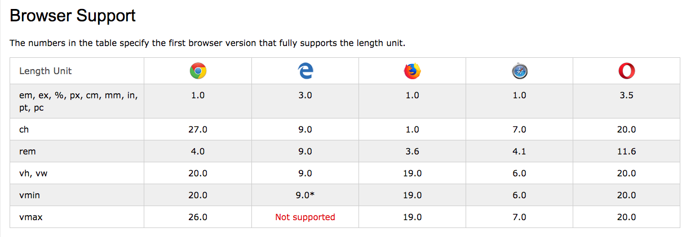

Hoje vamos fazer:
- Um pequeno resumo da última aula
- Exercicios com texto e imagens
- Descobrir novos elementos estruturais do HTML5
- Recomendações na escrita de código
A ferramentas para desenvolver qualquer coisa variam de developer para developer. Nós temos de ver o que funciona melhor para nós próprios, ao que nos adaptamos.
Invistam algum tempo a criar um ambiente (dev environment) que vos ajude a escrever código mais rápido, a ir buscar a documentação mais depressa, a ter à mão tudo o que precisam.
O VS Code é muito personalizável, mas pode ser um bocado lento. O WebStorm ou PHPStorm é um IDE (integrated development environment) de topo, mas podemos não usar 90% das funcionalidades. Não tenham medo de experimentar.
O meu dev environment:
- VS Code com algumas extensões para PHP e WordPress, SCSS, Live Code
- Terminal: No macOS uso o iTerm e no Linux (Ubuntu) uso o HyperJS
- Webserver: máquinas virtuais com o VMWare para ter comigo um servidor local mais parecido possível com o servidor online
- Webserver: quando não preciso de uma aproximação do servidor, uso o Local para desenvolvimento WordPress
- Para compilar SCSS e JS no macOS uso o Codekit e no Linux/Windows uso o Prepros
- Firefox
Terminal
Vejam-no como um explorador de ficheiros super básico, mas que pode executar programas de automação para nos ajudar imensamente no nosso caminho. Vão certamente usar quando estiverem a apresnder Angular / React ou nodejs.
Resources
- W3Schools - https://www.w3schools.com
- MDN (Mozilla) - https://developer.mozilla.org
- CSS Tricks - https://css-tricks.com
- Repositórios no Github (ou outra plataforma)
- Stackoverflow - mas cuidado que a resposta pode ser antiga e não funcionar.
HTML template
<html>
<head>
<title></title>
</head>
<body>
</body>
</html>
Temos sempre que definir o tipo de documento na primeira linha.
<!DOCTYPE html>
e o DOCTYPE não é uma tag HTML
A sintaxe do HTML baseia-se nas tags.
O browser irá processar tudo o que estiver contido entre a tag de inicio <> e a tag de fim
Algumas tags, as chamadas de comandos isolados, não precisam de ter conteúdo entre o inicio e o fim. Por exemplo: <br /> ou <img />
<html> . . . </html>
Define que a página foi escrita em HTML.
<head> . . . </head>
Esta tag é usada para especificar dados meta sobre a página, por exemplo o título, dependências, definição de fonte, etc.
<title> . . . </title>
Esta tag contém o título da página.
<body> . . . </body>
Contém todos os elementos HTML da página.
Uma tag pode ter ATRIBUTOS
Todas as tags HTML podem ter atributos que o browser pode interpretar. Por exemplo, a tag <a> tem um atributo href, que o browser interpreta como o destino de uma hiperligação.
<a href="https://google.com">Visitar o Google </a>
O conjunto de tags, atributos e o seu conteúdo, chama-se de elemento.
Um elemento consiste em:
<tagname>O conteúdo a ser mostrado... </tagname>
Exemplos de atributos
href
src
width
height
style
IDs
classes
Correção de exercícios
<meta />
Menciona o autor da página, palavras chave, datas de publicação, etc...
ver exemplos > aula02.html<link />
Esta tag especifica o caminho para ligar ficheiros externos à página
<style> . . . </style>
Tag que serve para a inclusão de estilos dentro da própria página
<script> . . . </script>
Tag usada para adicionar códigos em JavaScript para se conseguir adicionar algum dinamismo ao site. Podemos também incluir ficheiros externos.
Recomendações
Usar sempre tags escritas em lowercase.
O standard em HTML5 não requer que as tags sejam escrita em letra minuscula, mas o W3C recomenda. Já no XHTML é obrigatório.
Existem unidades de medida em HTML
AbsolutaPixel - representado por PX
Centimetros e Milimentros - cm e mm
em - relativo ao font-size do elemento HTML em que se encontra
rem - relativo ao font-size do elemento <body>
% - relativo ao elemento pai
vh e vw - relativo ao tamanho da janela do browser
Fonte - https://www.w3.org/TR/css3-values/
Compatibilidade
Elementos estruturais comuns
<a>
<p>
<img>
<div>
<table>
<h1>, <h2>, <h3>, <h4>, <h5>
Elementos estruturais comuns - dados e listas
<ul>
<ol>
<li>
<div>
<table>
<tr>
<td>
<th>
Exercício Criar estrutura básica de um projecto em HTML
- Pastas: js, css, img, inc, fonts
- Na raíz criar um ficheiro chamado estruturabase.html
- Com o título: "Estrutura"
- Adicionar o template base HTML 5 mais todas as meta tags necessárias
Exercício 1 - Aula 2
Emmet
Novo Elementos Estruturais mais comuns em HTML5
<article> - define um artigo no documento
<aside> - define um conteúdo à parte do conteúdo principal
<details> - define detalhes adicionais ao conteúdo
<figure> - define um bloco para imagens
<footer> - define um rodapé do documento
<header> - define um cabeçalho para o documento
<main> - define o bloco de conteúdo principal do documento
<nav> - define items de navegação
<section> - define uma secção no documento
Para ver os restantes elementos, visite - https://www.w3schools.com/html/html5_new_elements.asp


Exemplo:
<section>
<h1>Porto: 6 sítios acolhedores para beber bons chás</h1>
<p>Tomar uma chávena de chá quente a meio da tarde continua
um clássico de aconchego e bom gosto, principalmente
nos dias mais frios. </p>
<section>
Exemplo:
<article>
<h1>Porto: 6 sítios acolhedores para beber bons chás</h1>
<p>Tomar uma chávena de chá quente a meio da tarde continua
um clássico de aconchego e bom gosto, principalmente
nos dias mais frios. </p>
<article>
Sugestão:
<section>
<article>
<h1>Porto: 6 sítios acolhedores para beber bons chás</h1>
<p>Tomar uma chávena de chá quente a meio da tarde continua
um clássico de aconchego e bom gosto, principalmente
nos dias mais frios. </p>
<article>
<section>
Atributo style
O atributo style pode ser usado na maior parte das tags, e deixa-nos adicionar estilos ao elemento HTML.
Alguns dos estilos que vamos utilizar são: background-color, color, font-size, width e height
Vamos falar de CSS e de estilos que podemos utilizar no atributo style mais à frente.
background-color & color
blue, white, red, yellow, black
Formulários
Existem várias tags HTML que nos ajudam a criar formulários nas nossas páginas web
<form> ... </form>
<input> - elemento de entrada
Elementos de entrada podem conter checkboxes (escolha multipla), campos de password, botões de radio (escolha singular), botão de envio (submit) e é definido pelo atributo type=""
Infelizmente, os formulários precisam de uma linguagem de programação que processe os dados, que os guarde numa base de dados, ou que envie um email.
<input type="text"> Define uma linha de texto
<input type="radio"> Define um radio button - escolha uma opção entre várias
<input type="submit"> Gera um botão de envio de dados
<form>
Primeiro nome:
<input type="text" name="firstname" /<
Último nome:
<input type="text" name="lastname" />
</form>
<form>
<input type="radio" name="gender" value="male" checked> Masculino
<input type="radio" name="gender" value="female"> Feminino
<input type="radio" name="gender" value="other"> Outro
</form>